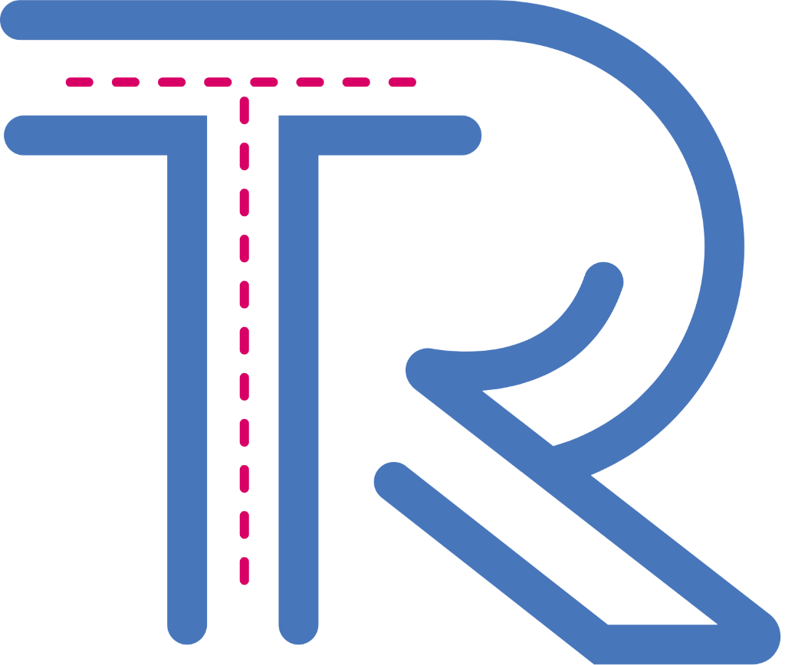

Industrial Evidence Intelligence for heavy manufacturing. Search across video procedures, technical documents, and workpiece keyframes with multi-modal retrieval and grounded answers — all running locally on RTX 4050 at zero cost.
Hover over donut wheel slices or legend rows below to inspect artifact distributions and functional engineering subsystem boundaries.
| ID | Configuration | Active Retrieval Lanes | Role | Joint Recall@5 (95% CI) | Joint Recall@10 (95% CI) | Joint MRR@20 | Latency |
|---|---|---|---|---|---|---|---|
| A0 | bm25-only |
Chunk BM25 lexical | Publishable floor | 0.0% [0.0%–0.0%] | 0.0% [0.0%–0.0%] | 0.0000 | 3.1 ms |
| A1 | text-only |
Chunk dense + BM25 RRF | Standard text RAG | 0.0% [0.0%–0.0%] | 0.0% [0.0%–0.0%] | 0.6598 | 147.0 ms |
| A2 | +image |
A1 + SigLIP 2 keyframe | Keyframe contribution | 0.0% [0.0%–0.0%] | 0.0% [0.0%–0.0%] | 0.6598 | 209.7 ms |
| A3 | +video-caption |
A2 + BGE-M3 segment text | Video caption lane | 50.0% [33.3%–66.7%] | 70.0% [53.3%–86.7%] | 0.7620 | 212.2 ms |
| A4 | +video-visual |
A3 + SigLIP 2 visual lane | Direct visual path | 50.0% [33.3%–66.7%] | 70.0% [53.3%–86.7%] | 0.7620 | 220.9 ms |
| A5 | +links |
A4 + evidence links | The Connective Layer | 46.7% [30.0%–63.3%] | 73.3% [56.7%–86.7%] | 0.7759 | 246.2 ms |
| A6 | +rerank-local |
A5 + local RRF rerank | Local reranking | 46.7% [30.0%–63.3%] | 73.3% [56.7%–86.7%] | 0.7759 | 364.7 ms |
| A7 | full |
A5 + temporal refine + QA | The Complete Product | 46.7% [30.0%–63.3%] | 73.3% [56.7%–86.7%] | 0.7759 | 387.5 ms |
| A8 | full - query-analysis |
A5 + temporal refine | Query analysis check | 46.7% [30.0%–63.3%] | 73.3% [56.7%–86.7%] | 0.7759 | 374.3 ms |
| A9 | oracle-evidence |
Gold evidence injected | Generation ceiling | — | — | — | 0.1 ms |
| A10 | adversarial |
A7 + 2 injected distractors | Hallucination test | 46.7% [30.0%–63.3%] | 73.3% [56.7%–86.7%] | 0.7759 | 388.8 ms |